Oak tree pass
Branch-skeleton oaks (work in progress, PR #21): curved limbs, round bole, fine leaf sprays, every tree an oak. Captured 2026-10-29 from the current development build at 1920×1080. Tap any image for full size. Gallery home
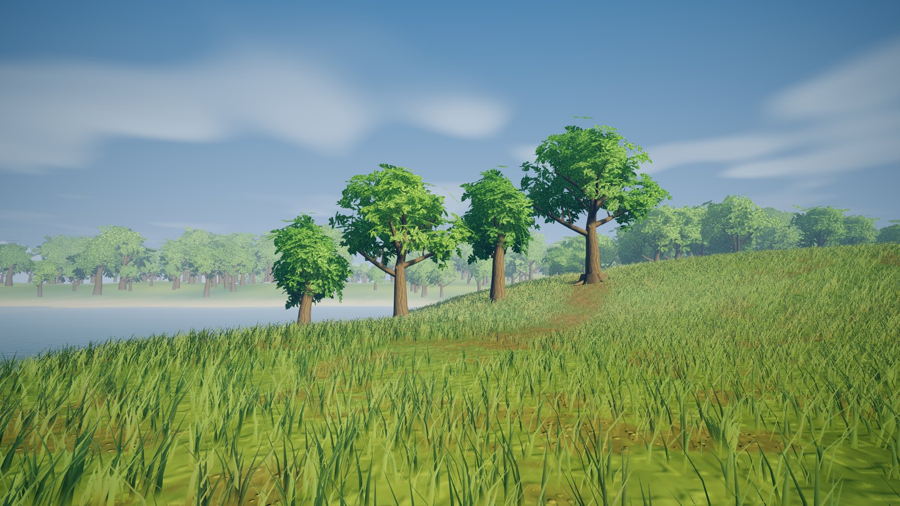
Oak family lineup The three oak variants side by side in open meadow, daylight.
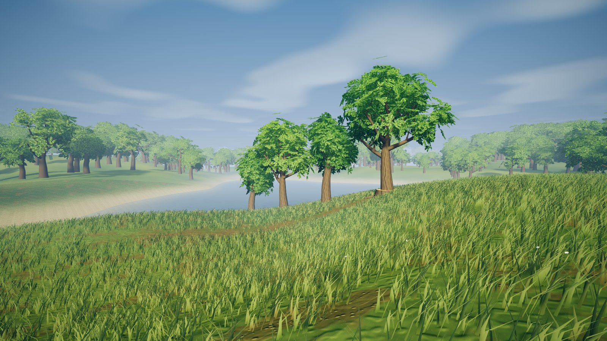
Lineup from the side The same oaks from a different angle, showing crown depth and limb spread.
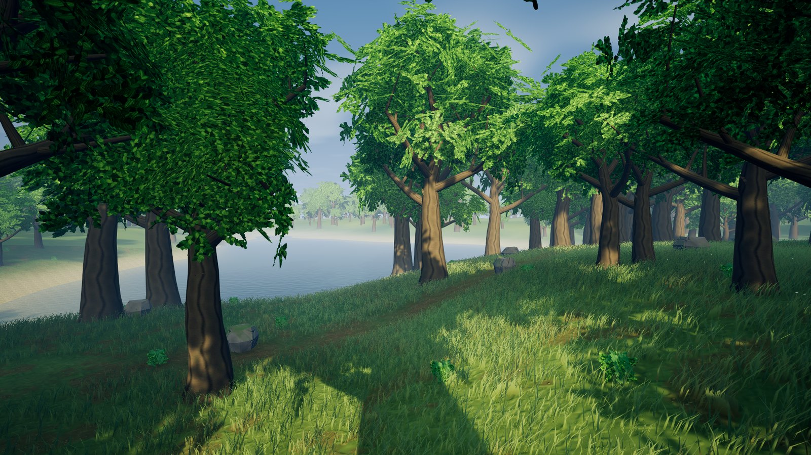
Oak grove A grove at normal walking height: curved limbs, fine leaf sprays, heavier trunks.
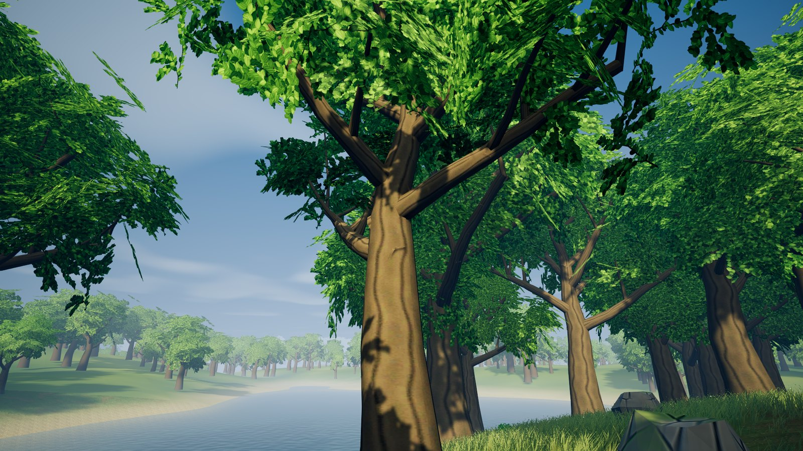
Looking up into the canopy Branch structure, bark running along each limb, and leaf sprays from below.
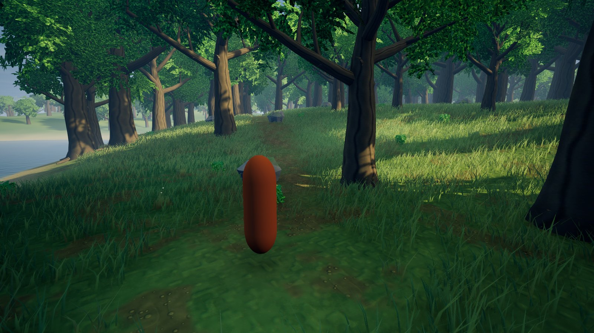
Spawn view The ordinary player camera at the start of the game.
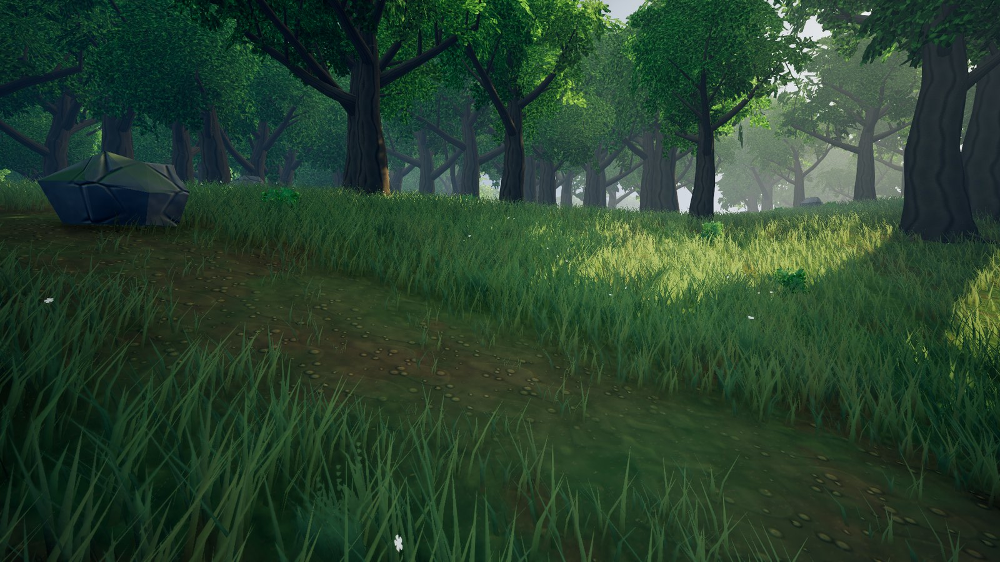
Meadow edge Trees at middle distance across the meadow.
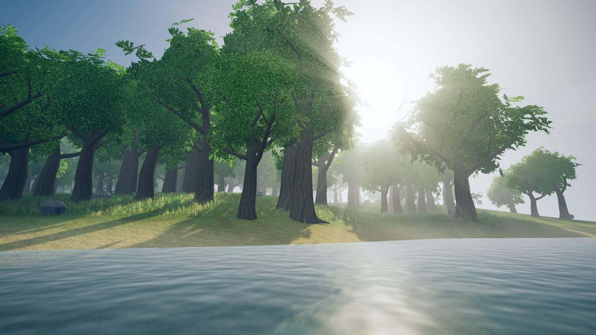
Into the sun Backlit crowns and sun shafts toward a daytime sun.
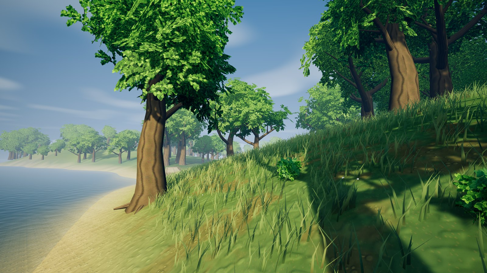
Coast Oaks along the shoreline.
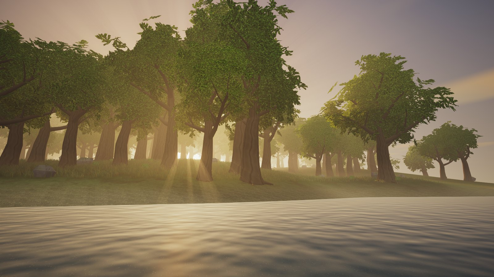
Golden hour, into the sun Low warm sun with backlit haze behind the trees.
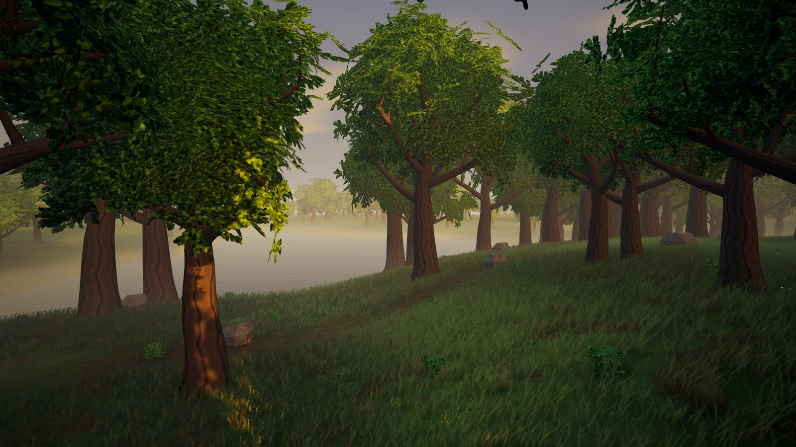
Golden hour grove The grove in warm low light.
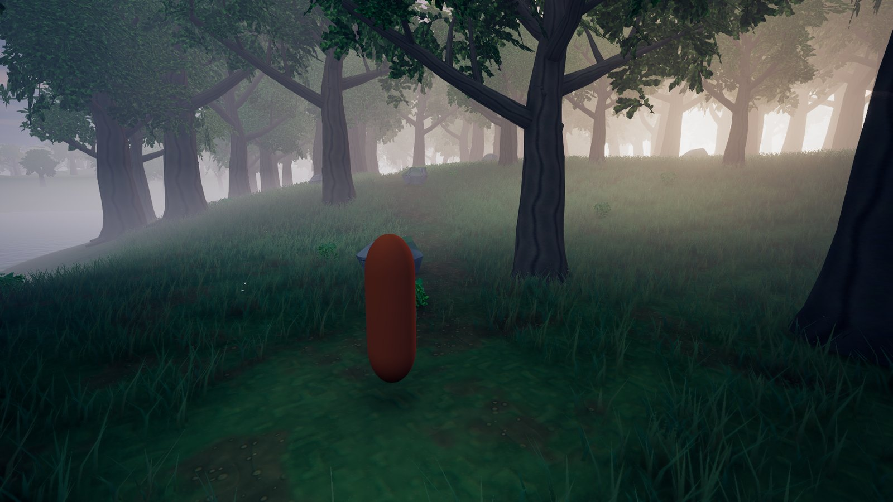
Dawn Cool morning mist around the spawn clearing.
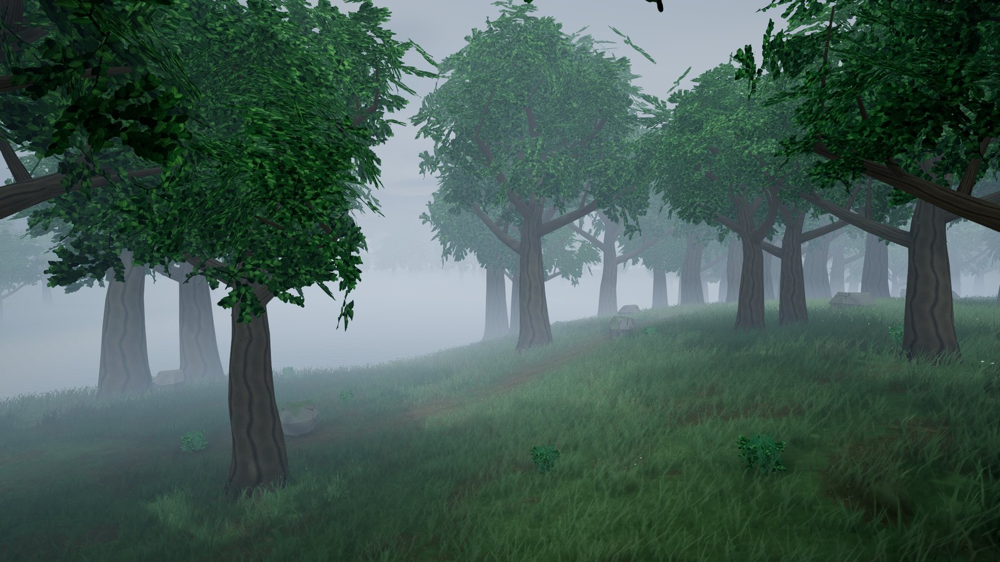
Overcast The grove under soft overcast light.